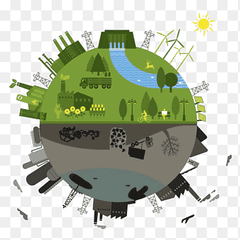

Haz click aquí
En esta unidad no solo conocerá nuestros recursos si no también como funciona, su variabilidad cultural y como se nos afecta en nuestro día a día.
Requieres haber pasado por las anteriores unidades
En esta unidad no solo conocerá nuestros recursos si no también como funciona, su variabilidad cultural y como se nos afecta en nuestro día a día.
Requieres haber pasado por las anteriores unidades
Elija la respuesta correcta según lo aprendido en las anteriores unidades de aprendizaje.
Colombia es un país rico en diversidad geográfica y natural, lo que se refleja en la gran cantidad de recursos naturales que posee. Desde sus montañas, selvas, costas hasta sus vastas fuentes de agua, el país cuenta con una amplia gama de recursos naturales, lo que lo convierte en uno de los países más biodiversos del mundo. En esta lección, exploraremos en profundidad los diferentes tipos de recursos naturales de Colombia, su importancia económica, su distribución geográfica, así como los desafíos que enfrenta en términos de conservación y sostenibilidad.
Los recursos naturales en Colombia se pueden clasificar en renovables y no renovables:
Recursos Renovables: Son aquellos que se regeneran de forma natural en un periodo de tiempo relativamente corto si son manejados de manera sostenible. Ejemplos incluyen el agua, los bosques, el suelo y la biodiversidad (flora y fauna).

Recursos No Renovables: Son aquellos que existen en cantidades limitadas y no se pueden reponer una vez agotados. Ejemplos son los minerales, el petróleo y el gas natural.

2.1. Abundancia y Distribución
Colombia es uno de los países más ricos en recursos hídricos del mundo. Sus principales fuentes de agua provienen de los sistemas montañosos de los Andes, que dan origen a importantes ríos como el Magdalena, el Cauca, el Putumayo, y el Caquetá. Además, cuenta con grandes áreas de humedales y lagunas.
Colombia está dividida en cinco grandes vertientes hidrográficas:
-Vertiente del Caribe
-Vertiente del Pacífico
-Vertiente del Orinoco
-Vertiente del Amazonas
-Vertiente del Catatumbo
2.2. Importancia Económica y Ecológica
El agua no solo es fundamental para el consumo humano, sino que también es crucial para la agricultura, la generación de energía hidroeléctrica, la industria y los ecosistemas. Colombia genera cerca del 70% de su electricidad a partir de la energía hidroeléctrica, lo que subraya la importancia de este recurso en la matriz energética nacional.
2.3. Desafíos
A pesar de su abundancia, Colombia enfrenta serios problemas relacionados con la contaminación del agua, la deforestación y la mala gestión de cuencas hidrográficas. El cambio climático también está afectando la distribución y disponibilidad de recursos hídricos, con eventos de sequías y lluvias extremas.
3.1. Recursos Minerales Más Importantes
Colombia es rica en recursos minerales, siendo uno de los principales productores de carbón y esmeraldas a nivel mundial. Otros recursos minerales incluyen el oro, níquel, hierro, cobre y sal.
Carbón: Colombia es el quinto mayor exportador de carbón en el mundo, siendo las principales regiones productoras La Guajira y el Cesar.
Esmeraldas: Las minas de esmeraldas colombianas, situadas principalmente en los departamentos de Boyacá y Cundinamarca, son reconocidas por producir algunas de las esmeraldas más puras y valiosas del mundo.
Oro: La minería de oro ha sido una parte clave de la historia colombiana, con yacimientos importantes en Antioquia, Chocó y el Cauca.
3.2. Impacto Económico y Ambiental
La extracción de minerales genera importantes ingresos para el país, especialmente a través de las exportaciones. Sin embargo, la minería, particularmente la minería ilegal, ha generado una serie de problemas ambientales, como la deforestación, la contaminación del agua con mercurio y la destrucción de ecosistemas.
4.1. Cobertura Forestal
Colombia tiene aproximadamente 60 millones de hectáreas de bosques, lo que representa cerca del 52% de su territorio. Los bosques tropicales en el Amazonas, el Chocó y la región del Magdalena Medio son los más destacados.
4.2. Biodiversidad
El país alberga aproximadamente el 10% de la biodiversidad mundial. Los bosques colombianos no solo son importantes para la conservación de especies, sino que también son esenciales para la regulación del clima y el ciclo del carbono.
4.3. Desafíos
La deforestación es uno de los principales problemas que enfrenta Colombia. Las principales causas de la pérdida de bosques incluyen la expansión de la agricultura, la ganadería, la minería ilegal y los cultivos ilícitos. Se estima que cada año se pierden más de 200,000 hectáreas de bosques.
5.1. Petróleo y Gas
El petróleo es el principal producto de exportación de Colombia, con yacimientos importantes en los Llanos Orientales, el Valle del Magdalena y Putumayo. La producción de gas natural también ha crecido en los últimos años, con reservas localizadas en la costa Caribe.
5.2. Energía Hidroeléctrica
Como se mencionó anteriormente, la energía hidroeléctrica es la fuente principal de generación eléctrica en el país. Sin embargo, la dependencia de este tipo de energía hace que el sistema sea vulnerable a los cambios climáticos, como el fenómeno de "El Niño", que provoca sequías y afecta la capacidad de las hidroeléctricas.
5.3. Energías Renovables Alternativas
En los últimos años, Colombia ha empezado a invertir en energías renovables no convencionales, como la solar y la eólica, principalmente en las regiones del Caribe y La Guajira. Estas fuentes alternativas son clave para diversificar la matriz energética y reducir la dependencia de los combustibles fósiles.
6.1. Fauna y Flora
Colombia es el segundo país con mayor biodiversidad en el mundo, después de Brasil. Tiene una riqueza increíble de fauna y flora, con miles de especies endémicas. Su variedad de ecosistemas, que incluyen selvas tropicales, páramos, sabanas, manglares, entre otros, albergan especies como el jaguar, el cóndor de los Andes, y el oso de anteojos.
6.2. Parques Nacionales Naturales
Colombia cuenta con más de 59 áreas protegidas bajo la categoría de Parques Nacionales Naturales, que cubren cerca del 14% del territorio. Estas áreas son esenciales para la conservación de la biodiversidad, la regulación de los ciclos hídricos y la mitigación del cambio climático.
6.3. Amenazas a la Biodiversidad
Entre las principales amenazas para la biodiversidad colombiana están la deforestación, la minería ilegal, la caza furtiva, la contaminación, y los efectos del cambio climático. Además, la expansión de la frontera agrícola y los conflictos territoriales afectan la conservación de los ecosistemas naturales.
Consulta con Prometeo sobre que es la COP y para que funciona y abre un debate con tus compañeros en un foro
7.1. Desafíos en la Gestión de los Recursos Naturales
Colombia enfrenta grandes desafíos en la gestión de sus recursos naturales. La minería ilegal, la deforestación, la sobreexplotación de recursos hídricos y la contaminación de suelos y cuerpos de agua son problemas que requieren una atención urgente. La débil gobernanza y el conflicto armado en algunas zonas también dificultan la conservación y el uso sostenible de los recursos.
7.2. Políticas y Estrategias de Conservación
El gobierno colombiano ha implementado diversas políticas y leyes para proteger sus recursos naturales, como el Código de Recursos Naturales, la Ley de Bosques y la promoción de la Economía Circular. También se están llevando a cabo esfuerzos para restaurar ecosistemas degradados y promover la agricultura sostenible.
7.3. La Importancia del Desarrollo Sostenible
El desarrollo sostenible es crucial para asegurar que los recursos naturales de Colombia puedan ser utilizados de manera que satisfagan las necesidades presentes sin comprometer la capacidad de las futuras generaciones. Esto implica un manejo cuidadoso y equilibrado de los recursos, con el fin de garantizar su disponibilidad a largo plazo.
Obra publicada con Licencia Creative Commons Reconocimiento Compartir igual 4.0